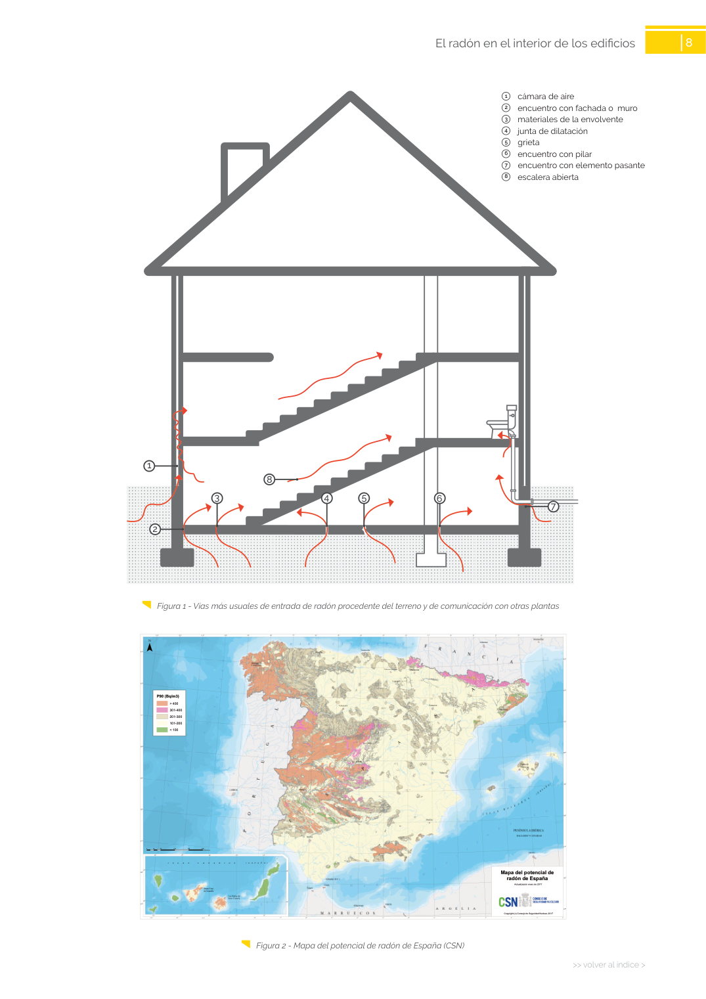
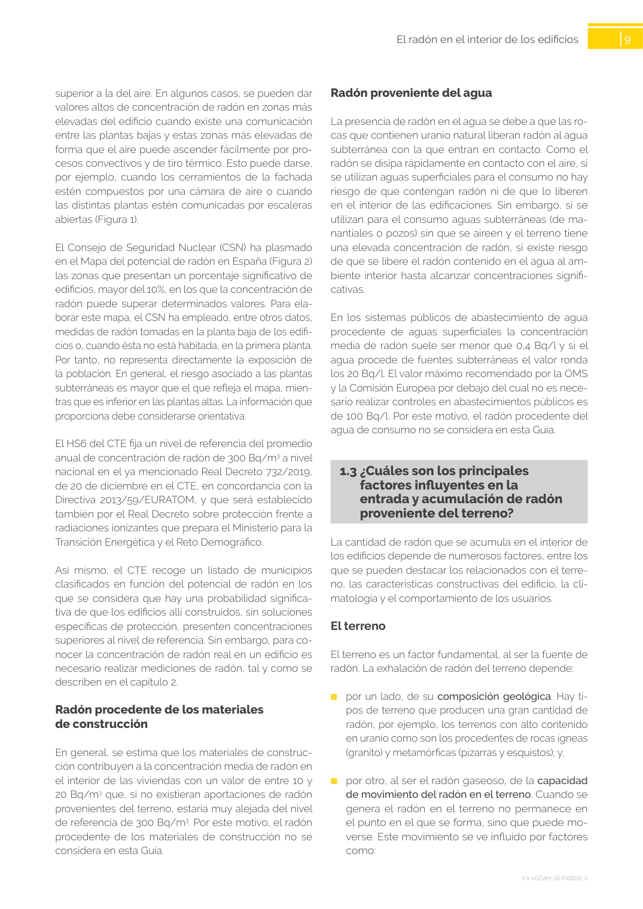

Guia de rehabilitacion frente al radon · edición sin-fecha · capa guia
Documento GUIA-PDF-23d2f2198c3b · SHA-256 del PDF 6765d0c34c51fbe193c3ed0c1378b710f98f086d16e2b68fc28ed36e143fdaea
Copia fiel del PDF fuente · Fuente oficial
Ficha de la disposición en la fuente oficial
Créditos y autoría en el PDF fuente. Reproducción con cita de fuente y autores.
Permiso literal: Se permite la reproducción total o parcial del contenido de este do Edición actual: septiembre 2020 cumento siempre y cuando se cite la fuente original y a sus autores.
2
Este documento ha sido elaborado por el Instituto de ciencias
de la construcción Eduardo Torroja (IETcc) bajo la supervisión
de la Dirección General de Agenda Urbana y Arquitectura del
Ministerio de Transportes, Movilidad y Agenda Urbana (MITMA).
SECRETARÍA GENERAL DE
AGENDA URBANA Y VIVIENDA MINISTERIO GOBIERNO El IETcc, perteneciente al Consejo Superior de Investigaciones DE TRANSPORTES, MOVILIDAD
DE ESPAÑA Y AGENDA URBANA DIRECCIÓN GENERAL DE
AGENDA URBANA Y ARQUITECTURA Científicas (CSIC), es el centro de investigación en edificación
de referencia en España. La Unidad de Calidad en la Construc
ción del IETcc asesora al MITMA en la elaboración del Código
MINISTERIO GOBIERNO DE CIENCIA Técnico de la Edificación que, desde el año 2019, cuenta con la DE ESPAÑA E INNOVACIÓN
sección HS6 Protección frente a la exposición al radón.
Dirección y Coordinación:
Ministerio de Transportes, Movilidad y Agenda Urbana
Isabel Marcos Anasagasti
Esta publicación está formada por una serie de documentos cuyo Raquel Lara Campos
objetivo es constituir una herramienta de ayuda para el diseño de Eduardo González de Prado
soluciones de protección frente al radón: Instituto de ciencias de la construcción Eduardo Torroja CSIC
Pilar Linares Alemparte
■ Guía de rehabilitación frente al radón
Fichas de soluciones: Autoras:
Pilar Linares Alemparte
A: De aislamiento del edificio Sonia García Ortega
■ Solución A1. Barrera frente al radón
■ Solución A1-1. Barrera frente al radón. Encuentros Colaboradoras:
■ Solución A2. Sellado de fisuras, grietas, encuentros y juntas Virginia Sánchez Ramos
■ Solución A3. Puertas estancas Karina Angélica García Pardo
■ Solución A4. Creación de sobrepresión
Edita:
B: De reducción del radón antes de que penetre en los locales Centro de Publicaciones Secretaría General Técnica
a proteger Ministerio de Transportes, Movilidad y Agenda Urbana©
■ Solución B1. Ventilación del espacio de contención: cá Entidad colaboradora:
mara de aire Consejo Superior de Investigaciones Científicas · CSIC
■ Solución B2. Ventilación del espacio de contención: loca Ministerio de Ciencia e Innovación
les no habitables
■ Solución B3. Despresurización del terreno Catálogo de publicaciones de la Administración General
del Estado: publicacionesoficiales.boe.es
C: De reducción del radón tras penetrar en los locales a proteger
■ Solución C1. Ventilación de los locales habitables Centro virtual de publicaciones del Ministerio de Transpor
tes, Movilidad y Agenda Urbana: www.mitma.gob.es
Fichas de ejemplos:
Página web del Código Técnico de la Edificación:
■ Ejemplo A1+B3. Barrera frente al radón + despresurización www.codigotecnico.org
con red de tubos
■ Ejemplo A2+B1. Sellado + ventilación de la cámara sanitaria Maquetación y diseño gráfico:
■ Ejemplo A2+B3. Sellado + despresurización con red de tubos Lapizmente. Estrategia • Diseño Gráfico
■ Ejemplo A2+C1. Sellado + ventilación mecánica de los loca- Los contenidos o ideas recogidas en este documento pertenecen a
les habitables sus autores. Este documento está basado en el conocimiento dispo
nible en el momento de su publicación. No se aceptará por las institu
Publicación completa: ciones ni los autores implicados responsabilidad de ningún tipo por el
ISBN: 978-84-498-1045-9 uso de estas recomendaciones. Las figuras tienen carácter ilustrativo
NIPO: 796-20-136-5 y no deben interpretarse como detalles constructivos.
1ª edición: septiembre 2020 Se permite la reproducción total o parcial del contenido de este do
Edición actual: septiembre 2020 cumento siempre y cuando se cite la fuente original y a sus autores.
>> volver al índice >Formatos: JSON del segmento · Markdown
¯ P90 (Bq/m3) > 400 301-400 201-300 101-200 < 100 0 50 100 150 200 25 Kilómetros LOGO CSN Copyright (c) Consejo de Seguridad Nuclear, 2017 9 >> volver al índice > El radón en el interior de los edificios superior a la del aire. En algunos casos, se pueden dar valores altos de concentración de radón en zonas más elevadas del edificio cuando existe una comunicación entre las plantas bajas y estas zonas más elevadas de forma que el aire puede ascender fácilmente por pro cesos convectivos y de tiro térmico. Esto puede darse, por ejemplo, cuando los cerramientos de la fachada estén compuestos por una cámara de aire o cuando las distintas plantas estén comunicadas por escaleras abiertas (Figura 1). El Consejo de Seguridad Nuclear (CSN) ha plasmado en el Mapa del potencial de radón en España (Figura 2) las zonas que presentan un porcentaje significativo de edificios, mayor del 10%, en los que la concentración de radón puede superar determinados valores. Para ela borar este mapa, el CSN ha empleado, entre otros datos, medidas de radón tomadas en la planta baja de los edifi cios o, cuando ésta no está habitada, en la primera planta. Por tanto, no representa directamente la exposición de la población. En general, el riesgo asociado a las plantas subterráneas es mayor que el que refleja el mapa, mien tras que es inferior en las plantas altas. La información que proporciona debe considerarse orientativa. El HS6 del CTE fija un nivel de referencia del promedio anual de concentración de radón de 300 Bq/m3 a nivel nacional en el ya mencionado Real Decreto 732/2019, de 20 de diciembre en el CTE, en concordancia con la Directiva 2013/59/EURATOM, y que será establecido también por el Real Decreto sobre protección frente a radiaciones ionizantes que prepara el Ministerio para la Transición Energética y el Reto Demográfico. Así mismo, el CTE recoge un listado de municipios clasificados en función del potencial de radón en los que se considera que hay una probabilidad significa tiva de que los edificios allí construidos, sin soluciones específicas de protección, presenten concentraciones superiores al nivel de referencia. Sin embargo, para co nocer la concentración de radón real en un edificio es necesario realizar mediciones de radón, tal y como se describen en el capítulo 2.

